- a.
- The first constraint is
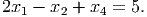 Thus
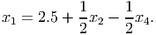 The other constraint is
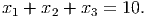 Substituting for x1 gives
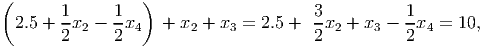 or equivalently
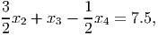 The objective function is
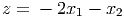 Substituting for x1 gives
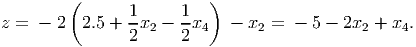 - b.
- We pivot on a11:

which agrees with the calculations in part (a).
- a.
- The sign of bh is negated, if it is positive.
- b.
- Let row k be the minimum ratio row. After pivoting in the wrong row, we get bk < 0.
For any x ≥ 0, the dot product cT x ≥ 0, since c ≥ 0. Hence, no feasible point can be strictly better than x = 0, so x* = 0.
Alternative proof: Add slack variables, so we get the equivalent problem
The simplex tableau for this formulation is in optimal form, showing the optimal solution is to take all x nonbasic and take s = b.
- a.
- We need to keep x3 ≥ 0, so we require 1.82 - 0.36t ≥ 0, or equivalently t ≤ 5. If we had t > 5 then we would have x3 < 0.
- b.
- When t = 2.5, we get x(t) = [2.5, 13.525, 0.91, 0, 0, 6.025, 0]T . Note that x(2.5) = x(0) + x(5).
- c.
- Yes: you can check that Ax = b for the brewery problem, and clearly x(2.5) ≥ 0.
- d.
- No, it is not a basic solution. It has 4 positive components, so the columns it
uses are not linearly independent. A basic feasible solution for a problem with 3
constraints has at most 3 positive components.
It is an average of 2 other points. Extreme points cannot be expressed as nonnegative linear combinations of 2 other feasible points.
- a.
- optimal form: a = 0, c ≥ 0.
- b.
- unbounded form: a > 0, b ≤ 0.
- c.
- infeasible form: a < 0.
- a.
- We don’t need an artificial variable for the second constraint, since x2 can serve as a
basic variable. So we introduce one artificial variable y1 for the first constraint, and
minimize y1.
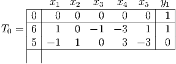 Pivoting on the y1 entry in the first constraint gives the canonical form tableau:
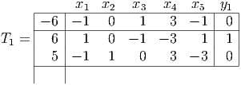 x1 and x5 are candidates to enter the basis. We arbitrarily choose x1 to enter the basis. The minimum ratio test shows that we pivot on the first constraint row, so in position a11. This gives the tableau
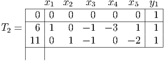 Hence the original problem is feasible, and we have an initial BFS for Stage 2 with basic variables x1 = 6 and x2 = 11.
- b.
- Deleting the artificial variable and reintroducing the original objective function gives the
tableau
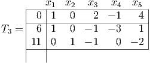 Pivoting in position a11 gives a canonical form tableau
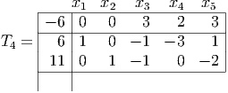 This is in optimal form, so the optimal solution is
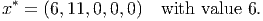 We can check in the original tableau that this solution is indeed feasible with value 6.
- a.
-
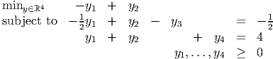 - b.
- Given
 feasible, we construct
feasible, we construct
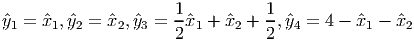 Then ŷ is feasible, with the same value ẑ as
 .
.
Given feasible ŷ, we construct 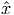1 = ŷ1, 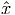2 = ŷ2.
- c.
- The optimal solution in one problem maps to a feasible solution in the other. Assume the optimal values disagree; we obtain a contradiction. If x* mapped to a nonoptimal feasible solution ỹ then there would be a better y solution, but this would then map to a better x solution. This is a contradiction.
- d.
- If we can find a sequence of x solutions with value diverging to -∞ then the
corresponding y solutions must also have value diverging to -∞.
If we can find a sequence of y solutions with value diverging to -∞ then the corresponding x solutions must also have value diverging to -∞.
- e.
- We obtain a contradiction. Assume one problem is infeasible and the other is feasible. A feasible solution in the feasible problem maps to a feasible solution in the “infeasible” problem, which is a contradiction.